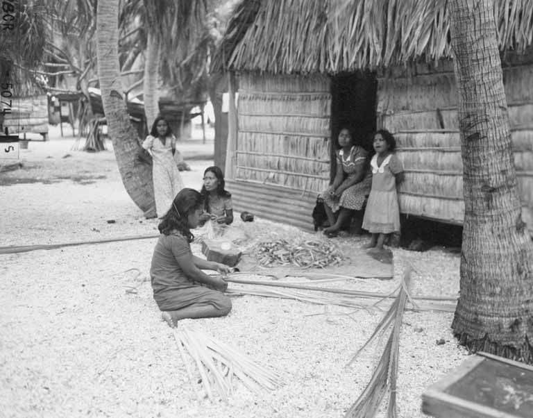
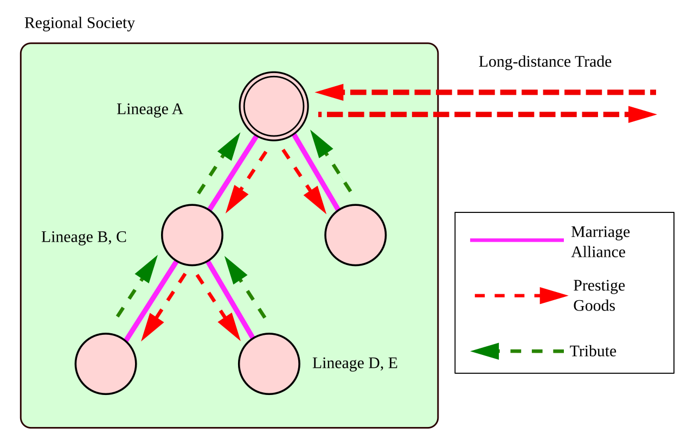

Making a Living
Every human group, everywhere, faces the same stubborn problem: how to pull food, energy, and material things out of a particular patch of the world — and how to move those things between people once they exist. The answers are astonishingly varied. A band of foragers in the Kalahari, a Nuer herdsman counting his cattle, a Javanese rice farmer, and a commuter buying coffee are all solving the same equation with wildly different tools. Economic anthropology is the study of that variety: how people produce, exchange, consume, and assign worth, and why an economy always turns out to be a way of organizing human relationships as much as a way of organizing goods. This chapter follows the thread from the field and the herd all the way to the market and the shopping cart.
By the end of this chapter you can
- Compare the five major subsistence strategies — foraging, pastoralism, horticulture, agriculture, industrialism — and how each shapes population, mobility, and social complexity.
- Explain what a mode of production is and distinguish the kin-ordered, tributary, and capitalist modes (Eric Wolf).
- Describe the domestic mode of production and Marshall Sahlins’s idea of the original affluent society.
- Distinguish reciprocity, redistribution, and market exchange (Karl Polanyi), and the three forms of reciprocity (Sahlins).
- Explain the Kula ring and the potlatch, and what Marcel Mauss meant by the gift.
- Analyze how cultures assign value, and contrast use value, exchange value, and prestige.
- Explain conspicuous consumption and how goods communicate identity (Veblen, Douglas, Bourdieu).
- Trace how the division of labor produces inequality across band, tribe, chiefdom, and state societies.
Section 1Subsistence strategies
Five ways to feed a society
A subsistence strategy (or mode of subsistence) is the basic way a society gets its food and energy from the environment. Anthropologists conventionally sort human economies into five broad types — foraging, pastoralism, horticulture, agriculture, and industrialism — not because every society fits neatly into one box, but because the food-getting strategy predicts so much else. It shapes how many people can live together, how often they move, how much surplus they can store, and, ultimately, how unequal they become. This is the core insight of cultural ecology, the approach Julian Steward built in the mid-twentieth century: culture and environment are locked in a feedback loop, and the way people make a living is the hinge between them.
The five strategies also fall in a rough order of intensity — how much human labor and energy is invested per unit of land. Foraging invests the least and supports the fewest people per square mile; industrial agriculture invests the most and supports the most. But “more intensive” does not mean “better” or “more advanced.” Each strategy is a finely tuned solution to a particular landscape, and older anthropology’s habit of ranking them from “primitive” to “civilized” — a legacy of Lewis Henry Morgan’s nineteenth-century ladder of savagery, barbarism, and civilization — has been firmly retired.
Foraging, herding, and gardening
Foraging (hunting and gathering) is how humans lived for well over ninety percent of our species’ history, and a number of peoples carried it into the twentieth century and beyond: the Ju/’hoansi San of the Kalahari, studied by Richard Lee; the Mbuti of the Congo forest, described by Colin Turnbull in The Forest People; the Hadza of Tanzania, some of whom still forage today. Foragers typically live in small, mobile bands, own little that cannot be carried, share food widely, and make decisions without permanent leaders. James Woodburn called such economies “immediate-return” — food is eaten within days rather than stored — and that lack of storable wealth is a large part of what keeps such groups egalitarian.
One caution before we go further, and it applies to every example in this chapter. The peoples named here are living communities with citizenship, wage jobs, land claims, schools, and politics of their own; most Ju/’hoansi today are not full-time foragers, and none of these groups is a window onto the human past. An ethnography describes a particular community at a particular moment, not a timeless stage of development. Read the cases below as snapshots of how people solved a problem in one time and place — never as evidence that some societies are earlier or simpler versions of others.
Pastoralism is a specialized economy built around herds of domesticated animals: cattle for the Nuer of South Sudan (immortalized in E. E. Evans-Pritchard’s ethnography), for whom cattle are wealth, bridewealth, and poetry at once (anthropologists prefer “bridewealth” to the older “bride-price,” which wrongly implies that a woman is being purchased); camels, goats, and sheep across the Middle East and Central Asia; reindeer among the Sami and Siberian peoples. Pastoralists are often nomadic or practice transhumance (seasonal movement between pastures), and they usually trade animal products for the grain they cannot grow. Horticulture — small-scale gardening with hand tools and no plough — often takes the form of swidden (slash-and-burn or shifting cultivation), as among the Yanomami of Amazonia or the Tsembaga Maring of highland New Guinea, whose ritual pig cycles Roy Rappaport analyzed as a form of ecological regulation. Horticulturalists clear a plot, garden it for a few years, then let it return to forest.
Agriculture and industrialism
Agriculture (intensive farming) uses the plough, draft animals, irrigation, terracing, and fertilizer to work the same land year after year. It produces a storable surplus — and surplus changes everything. It allows permanent villages and cities, feeds people who do not farm (priests, soldiers, artisans, rulers), and makes possible the deep social hierarchies of chiefdoms and states. Clifford Geertz’s classic study of Javanese wet-rice farming, Agricultural Involution, showed how intensifying the same system could absorb ever more labor without lifting anyone out of poverty — intensification is not automatically progress.
Industrialism harnesses fossil-fuel energy, machines, and wage labor to mass-produce goods, including food. Under industrialism, most people no longer produce their own subsistence at all; they earn money and buy it. That single fact — near-total dependence on the market for the necessities of life — is what most sharply separates an industrial economy from the four that came before, and it sets up every theme in the rest of this chapter.
| Strategy | Food source | Mobility | Typical scale | Example |
|---|---|---|---|---|
| Foraging | Wild plants & animals | High (mobile bands) | Small, egalitarian | Ju/’hoansi San, Mbuti, Hadza |
| Pastoralism | Herd animals & their products | Nomadic / transhumant | Small–medium tribes | Nuer, Maasai, Sami |
| Horticulture | Garden crops (hand tools) | Semi-sedentary (shifting plots) | Villages, tribes | Yanomami, Tsembaga Maring |
| Agriculture | Intensive field crops | Sedentary | Chiefdoms & states | Javanese rice farmers, Inca |
| Industrialism | Bought with wages | Sedentary, urban | Nation-states, global | Modern market societies |
- The five subsistence strategies are foraging, pastoralism, horticulture, agriculture, and industrialism, in rough order of energy invested per unit of land.
- Cultural ecology (Steward) treats the food-getting strategy as the hinge between environment and social form.
- Only agriculture and industrialism generate the storable surplus that supports cities, specialists, and steep hierarchy.
- Ranking strategies from “primitive” to “advanced” is a discredited nineteenth-century idea; each is a good fit for its environment.
Section 2Modes of production

What a mode of production is
A subsistence strategy tells you what a society produces; a mode of production tells you how it is organized socially to do so. The concept comes from Karl Marx and was carried into anthropology most influentially by Eric Wolf in Europe and the People Without History. A mode of production combines two things: the means of production — the land, tools, water, seed, and animals people work with — and the relations of production — the social rules about who owns those means, who does the labor, and who gets to keep the surplus. Change the relations, and you change the society, even if the technology stays the same.
Wolf argued that the enormous diversity of human economies could be grouped into three great modes: the kin-ordered, the tributary, and the capitalist. The point of such a scheme is not to pigeonhole cultures but to ask a sharp question of any economy: who controls the means of production, and how is the surplus pumped out of the people who labor? That question is as revealing about a Melanesian village as about a modern factory.
The domestic mode of production
In kin-ordered economies, labor is mobilized not by wages but by relationships. Marshall Sahlins called the household-centered version the domestic mode of production: the family is the unit that owns the tools, does the work, and consumes the result. Crucially, it produces for use — enough to meet the household’s needs — rather than for profit or accumulation. Sahlins noticed a paradox he called “underproduction”: domestic economies typically stop well short of their maximum output, because once needs are met there is little reason to keep working. (The economist A. V. Chayanov had seen the same pattern in Russian peasant households.)
This is why the domestic mode resists the endless growth that market economies take for granted. Its brake is social, not technical. A family that could grow more grain simply chooses leisure, ceremony, or visiting instead — the same logic that makes foragers “affluent” by wanting little. To make such a society produce a large surplus, some outside force — a chief, a landlord, a tax collector — usually has to compel it.
Tributary and capitalist modes
In the tributary mode, a ruling class extracts surplus from primary producers through tribute, tax, rent, or forced labor. The producers still control day-to-day farming, but a portion of what they grow flows upward to a chief, temple, or state. The Inca mit’a labor draft, medieval European feudalism, and the great agrarian empires all worked this way. In the capitalist mode, by contrast, workers do not control the means of production at all; those are privately owned, and people survive by selling their labor for a wage. Goods are produced as commodities for sale, and the owner keeps the difference between what labor produces and what it is paid — what Marx called surplus value. This is also where Marx located alienation: the worker no longer owns the product, the process, or often even a sense of purpose in the work.
Naming these modes helps anthropologists see continuity and rupture at once. A single country today may contain households producing food for use, peasants paying rent to landlords, and wage laborers in factories — three modes braided together. The braid, not the pure type, is the usual reality.
| Mode | Who controls means | How labor is mobilized | Where surplus goes | Example |
|---|---|---|---|---|
| Kin-ordered (domestic) | The kin group / household | Kinship obligation | Stays in the household; little surplus | Foragers, horticultural villages |
| Tributary | Producers work it; elites claim a share | Tribute, rent, corvée labor | Upward to chief, temple, or state | Inca, feudal Europe |
| Capitalist | Private owners of capital | Wage labor | To owners as profit (surplus value) | Industrial market societies |
- A mode of production = the means of production plus the relations of production (who owns, who labors, who takes the surplus).
- Wolf’s three modes: kin-ordered, tributary, and capitalist.
- The domestic mode (Sahlins) produces for use, tends to underproduce, and resists growth unless compelled from outside.
- The capitalist mode is defined by wage labor, private ownership of the means of production, and commodity production for profit.
Section 3Economic exchange

Polanyi’s three modes of exchange
Once goods exist, they have to move between people, and human societies have invented only a handful of principles for moving them. Karl Polanyi, whose substantivist approach insisted that the economy is always embedded in social relationships rather than a free-standing machine, named three: reciprocity, redistribution, and market exchange. Most economies mix all three, but usually one dominates and gives the society its economic character. Reading them requires an emic sensibility — grasping what an exchange means to the participants — because the same handful of yams can be a wage, a gift, or an insult depending entirely on the relationship it travels along.
Reciprocity and the gift
Reciprocity is the back-and-forth giving between people who stand in some social relationship. Marcel Mauss, in The Gift (1925), showed that the “free” gift is never free: it carries a threefold obligation — to give, to receive, and to repay — and it binds giver and receiver into an ongoing relationship. A gift is a total social fact, moral and economic and spiritual at once. Sahlins later sorted reciprocity into three shades. Generalized reciprocity is open-handed giving with no accounting and no expected return date — the way parents feed children, or close kin share. Balanced reciprocity expects a roughly equivalent return within a reasonable time. Negative reciprocity is the attempt to get something for nothing — hard bargaining, barter with strangers, even theft.
The textbook case of balanced reciprocity is the Kula ring, documented by Bronisław Malinowski in Argonauts of the Western Pacific (1922). Islanders of the Massim region off eastern Papua New Guinea — the Trobriands and their neighbors — undertake dangerous canoe voyages to exchange two kinds of ceremonial valuables: red-shell necklaces (soulava) that travel clockwise around a ring of islands, and white-shell armbands (mwali) that travel counterclockwise. The valuables are never kept for long; the prestige lies in receiving a famous piece and passing it on. Alongside this ceremonial circuit runs ordinary barter (gimwali) for practical goods — but confusing the two is a grave insult. Malinowski’s Kula demolished the old myth that “primitive” economies were just clumsy versions of our own; David Graeber later showed that the supposed pre-money world of pure barter is itself largely a myth — credit and reciprocity came first.
Redistribution and market
Redistribution pools goods at a social center and then sends them back out. A Melanesian “big man” persuades and cajoles his followers into contributing pigs for a huge feast; a chief collects first-fruits and hosts the village; a modern state collects taxes and funds roads and pensions. The most discussed anthropological case is the potlatch of the Northwest Coast peoples — the Kwakwaka’wakw and their neighbors — documented by Franz Boas. A host gives away staggering quantities of blankets, coppers, and food to validate a claim to rank, and the guests serve as witnesses to that claim. Status comes not from hoarding wealth but from distributing it. Two cautions: the dramatic destruction of property that fills older textbooks was never the whole of the institution and appears to have intensified under colonial upheaval, and the potlatch is not a thing of the past — it remains a living ceremony, central to naming, marriage, mourning, and the transfer of hereditary rights among Northwest Coast nations today. Market exchange, finally, moves goods by price, set impersonally by supply and demand and mediated by general-purpose money. Geertz’s study of the Moroccan suq (bazaar) shows that even “the market” is thick with culture — bargaining, clientship, and information games — but its organizing principle is the price, not the relationship.
| Mode | Direction of flow | Social principle | Example |
|---|---|---|---|
| Reciprocity | Person ↔ person | Obligation between social equals or kin | Kula ring, food sharing |
| Redistribution | In to a center, then out | A recognized central authority | Potlatch, big-man feast, taxation |
| Market exchange | Goods for money at a price | Supply, demand, and price | Bazaar, modern retail |
- Polanyi’s three modes of exchange are reciprocity, redistribution, and market exchange; the economy is embedded in social relations.
- Mauss showed the gift carries obligations to give, receive, and repay; Sahlins split reciprocity into generalized, balanced, and negative.
- The Kula ring (Malinowski) is the classic case of balanced, ceremonial reciprocity.
- The potlatch (Boas) shows redistribution as a route to rank — prestige through giving away.
Section 4Consumption and value

Where does value come from?
It is tempting to think a thing’s value is a fact about the thing — its usefulness, or the labor inside it. Marx distinguished use value (what a good does for you) from exchange value (what it trades for), and located the source of exchange value in labor. But anthropology adds a stubborn observation: value is culturally assigned, and cultures disagree profoundly about what is precious. A cow is capital and poetry to a Nuer and merely beef to a commuter; a Kula armshell is priceless in one circuit and worthless outside it. Paul Bohannan’s study of the Tiv of Nigeria described spheres of exchange: everyday food formed one sphere, prestige goods (cattle, brass rods) another, and rights in people (marriage) a third. Converting upward between spheres brought honor; converting downward — selling prestige goods for mere food — brought shame. Value, in other words, is a moral map, not a price list.
Consumption as communication
If production makes goods and exchange moves them, consumption is where they are used up — and where they do their loudest cultural work. Mary Douglas and Baron Isherwood argued in The World of Goods that consumption is a system of communication: what we eat, wear, and display is a running statement about who we are and where we belong. Thorstein Veblen had already coined conspicuous consumption to describe how the leisure class advertises status by wasteful display — spending precisely because it is visible and expensive. Pierre Bourdieu deepened this in Distinction: taste itself is learned, class-marked, and a form of cultural capital. The foods you find delicious and the music you find beautiful were installed by your upbringing — your habitus — and they quietly sort people into social ranks. Consumption is never just about need; it is about meaning and belonging.
Commodities and their biographies
Anthropologists also ask how a thing’s status can change over its life. Igor Kopytoff proposed writing the cultural biography of a thing: an object can move in and out of being a commodity. A basket woven for sale is a commodity; the same basket, once given to a daughter as an heirloom, is singularized and removed from the market. Arjun Appadurai gathered these ideas in The Social Life of Things. Annette Weiner, revisiting Malinowski’s Trobriands, identified inalienable possessions — sacred valuables that carry a group’s identity and are kept precisely while other things are given away. And Sidney Mintz’s Sweetness and Power traced a single commodity, sugar, from Caribbean plantation slavery to the English working-class tea table, showing how consumption at one end of the world is stitched to production and suffering at the other.
| Concept | What it captures | Example |
|---|---|---|
| Use value | What a good does for you directly | A shirt keeps you warm |
| Exchange value | What a good trades for | The shirt’s price tag |
| Prestige / sign value | The status a good signals | A designer label; a Kula shell |
| Inalienable possession | Wealth kept, not sold, that holds identity | An heirloom, a crown, a sacred valuable |
- Value is culturally assigned: distinguish use value, exchange value, and prestige, and note Bohannan’s spheres of exchange.
- Consumption is communication (Douglas & Isherwood); conspicuous consumption (Veblen) and taste as cultural capital (Bourdieu) mark class.
- A thing can move in and out of being a commodity (Kopytoff, Appadurai); inalienable possessions (Weiner) are kept, not sold.
- Commodity chains (Mintz’s sugar) link consumption here to production — and exploitation — there.
Section 5Work and inequality

The division of labor
No society asks everyone to do everything. The division of labor — the systematic assignment of different tasks to different people — is a human universal, but how it is drawn is deeply cultural. The most widespread axis is gender: in most foraging societies men hunt and women gather (though women’s gathering often supplies the larger share of calories), and countless economies assign weaving, potting, herding, or trading to one gender. Yet the content of these assignments is not fixed by biology. Margaret Mead’s Sex and Temperament in Three New Guinea Societies found neighboring peoples with strikingly different ideas of what was “naturally” male or female work — powerful early evidence that gender roles are culturally constructed, not given. Labor is also divided by age (children herd, elders advise) and, as societies grow complex, by specialization and craft.
From equality to hierarchy
Elman Service’s well-known typology — band, tribe, chiefdom, state — sorts societies by political centralization and inequality, and it roughly tracks the subsistence spectrum from Section 1. Use it as a set of analytic ideal types, not as a staircase every society must climb. Real histories move sideways and backward as readily as “up”: societies abandon centralized rule, absorb neighbors, or sit squarely between two labels, and the categories say nothing whatever about the worth or sophistication of the people in them. Foraging bands are assertively egalitarian: they use active leveling mechanisms to keep anyone from rising above the group. Tribes of horticulturalists and pastoralists have “big men” whose influence must be constantly re-earned through generosity. Chiefdoms introduce hereditary rank; states add permanent, institutionalized stratification — classes with unequal access to resources, enforced by law and force. The engine of this transformation is surplus: once food can be stored, controlled, and inherited, the door opens to permanent inequality. Friedrich Engels linked the rise of the state to private property and, controversially, to a decline in women’s status — a claim feminist anthropologists have debated and refined ever since.
Whose work counts?
A society’s idea of “work” is itself a cultural artifact, and it tends to make some labor invisible. Feminist anthropology has insisted that unpaid domestic and care work — cooking, child-rearing, tending the sick — is real, skilled, economically essential labor, even though market economies do not price it and censuses often ignore it. The same blind spot hides the vast informal economy — street vendors, day laborers, home workshops — on which much of the world’s population actually survives. And global commodity chains stretch the division of labor across the planet: the person who stitches a garment and the person who wears it may never share a language, a wage scale, or a legal system. Studying who does the work, who is paid, and who is counted is one of the sharpest tools anthropology has for seeing inequality plainly.
| Society type | Division of labor | Inequality | Example |
|---|---|---|---|
| Band | By age & gender only | Egalitarian; leveling mechanisms | Ju/’hoansi foragers |
| Tribe | Age, gender, some part-time specialists | Rank earned, not fixed (big men) | Highland New Guinea |
| Chiefdom | Hereditary rank; craft specialists | Ranked lineages | Northwest Coast, Polynesia |
| State | Full-time specialization; classes | Institutionalized stratification | Agrarian empires, modern states |
- The division of labor by gender, age, and specialization is universal, but its content is cultural (Mead).
- Service’s band, tribe, chiefdom, state typology is a scale of rising inequality driven by storable surplus — ideal types, not a ladder societies must climb.
- Egalitarian societies use active leveling mechanisms; states institutionalize stratification.
- Much real labor — unpaid care work and the informal economy — is made invisible by how “work” is defined and counted.
The chapter in one breath
- Societies feed themselves through five subsistence strategies — foraging, pastoralism, horticulture, agriculture, industrialism — and only the intensive ones yield the surplus that builds cities and hierarchy.
- A mode of production is the social organization of that labor: Wolf’s kin-ordered, tributary, and capitalist modes differ over who owns, who works, and who takes the surplus.
- The domestic mode (Sahlins) produces for use and tends to underproduce; the capitalist mode runs on wage labor and commodity production.
- Goods move by reciprocity, redistribution, or market exchange (Polanyi); the Kula ring and the potlatch show how exchange builds relationships and rank.
- The gift is never free (Mauss); reciprocity comes in generalized, balanced, and negative shades (Sahlins).
- Value is culturally assigned; consumption communicates identity, and conspicuous consumption and taste (Veblen, Bourdieu) mark class.
- The division of labor and the band–tribe–chiefdom–state typology show how surplus and specialization turn difference into inequality — and much real labor, unpaid and informal, goes uncounted.
ReferenceWords worth knowing
A quick reference for the terms in this chapter — skim it now, or circle back whenever a word trips you up.
- Agriculture
- Intensive farming of the same land year after year using the plough, irrigation, and draft animals; produces a storable surplus.
- Balanced reciprocity
- Exchange in which a roughly equivalent return is expected within a reasonable time, as in the Kula ring.
- Band
- The smallest, most egalitarian society type — a small, mobile group typical of foragers.
- Bridewealth
- Goods (often livestock) transferred from a groom’s kin to a bride’s kin to validate a marriage and compensate for the loss of her labor and children; not a purchase of the bride.
- Chiefdom
- A society with hereditary rank and a central figure who redistributes goods, intermediate between tribe and state.
- Commodity
- A good produced for exchange, whose value is measured against other goods or money.
- Conspicuous consumption
- Veblen’s term for wasteful, visible spending undertaken to display wealth and status.
- Cultural capital
- Bourdieu’s term for the tastes, knowledge, and manners learned through upbringing that mark and reproduce class position.
- Cultural ecology
- Julian Steward’s approach linking a society’s form to how it adapts economically to its environment.
- Division of labor
- The systematic assignment of different tasks to different people, drawn by gender, age, rank, and specialization.
- Domestic mode of production
- Sahlins’s term for household-based production for use, which tends to underproduce.
- Egalitarian
- Describing a society with no institutionalized differences in wealth, rank, or power beyond those of age and gender.
- Exchange value
- What a good will trade for — its worth measured against other goods or money, as distinct from its usefulness.
- Foraging
- Subsistence by hunting wild animals and gathering wild plants; the oldest human strategy.
- Generalized reciprocity
- Open-handed giving with no accounting and no set return, typical among close kin.
- Horticulture
- Small-scale gardening with hand tools and no plough, often involving shifting (swidden) cultivation.
- Inalienable possession
- Weiner’s term for a valuable kept out of exchange because it carries a group’s identity — wealth defined by being retained while other things are given away.
- Industrialism
- An economy based on fossil-fuel energy, machines, and wage labor, in which people buy rather than grow subsistence.
- Informal economy
- Economic activity outside official regulation, taxation, and measurement — street vending, day labor, home workshops — on which much of the world’s population survives.
- Kula ring
- The ceremonial exchange of shell valuables circulating among the Massim islands off eastern Papua New Guinea, documented by Malinowski; a classic case of balanced reciprocity.
- Market exchange
- The movement of goods for money at prices set impersonally by supply and demand.
- Mode of production
- The social organization of labor: the means of production plus the relations of production.
- Negative reciprocity
- The attempt to get something for nothing — hard bargaining, barter with strangers, or theft; typical of dealings with outsiders.
- Pastoralism
- Subsistence based on herds of domesticated animals, often involving nomadism or transhumance.
- Potlatch
- A Northwest Coast redistributive feast in which a host gives away wealth before witnesses to validate a claim to rank; outlawed in Canada 1885–1951 and still practiced today.
- Reciprocity
- Back-and-forth giving between people in a social relationship; generalized, balanced, or negative.
- Redistribution
- Exchange in which goods flow to a central authority and are then distributed outward.
- Spheres of exchange
- Bohannan’s term (from the Tiv) for separate ranked categories of goods that may be exchanged within a sphere but only rarely across them.
- State
- A society with centralized government, full-time specialization, and institutionalized class stratification backed by law and force.
- Stratification
- Permanent, institutionalized inequality in which classes or ranks have unequal access to resources, power, and prestige.
- Subsistence strategy
- The basic way a society obtains its food and energy from the environment.
- Surplus
- Production beyond immediate needs that can be stored, claimed, and inherited — the precondition for cities, specialists, and durable hierarchy.
- Swidden
- Shifting or slash-and-burn cultivation: a plot is cleared and burned, gardened a few years, then left to regrow while the gardeners move on.
- Transhumance
- The seasonal movement of herds and herders between established pastures, such as highland summer and lowland winter grazing.
- Tribe
- A society of horticulturalists or pastoralists larger than a band, with kin-based political organization and leaders whose influence must be earned rather than inherited.
- Tributary mode of production
- A mode in which a ruling class extracts surplus from producers through tribute, rent, or forced labor.
- Use value
- What a good does for its user directly — its practical usefulness, as distinct from what it trades for.